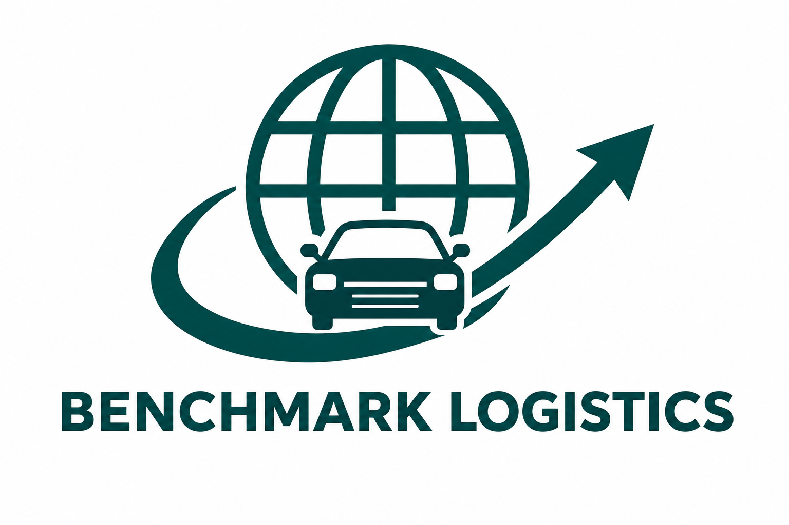
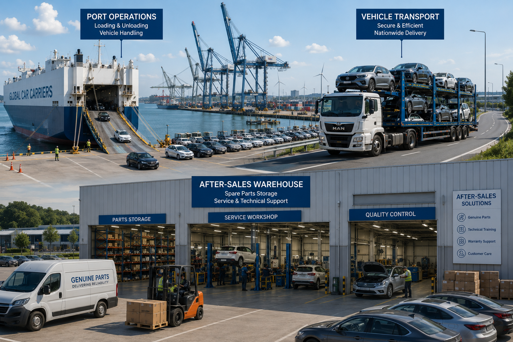
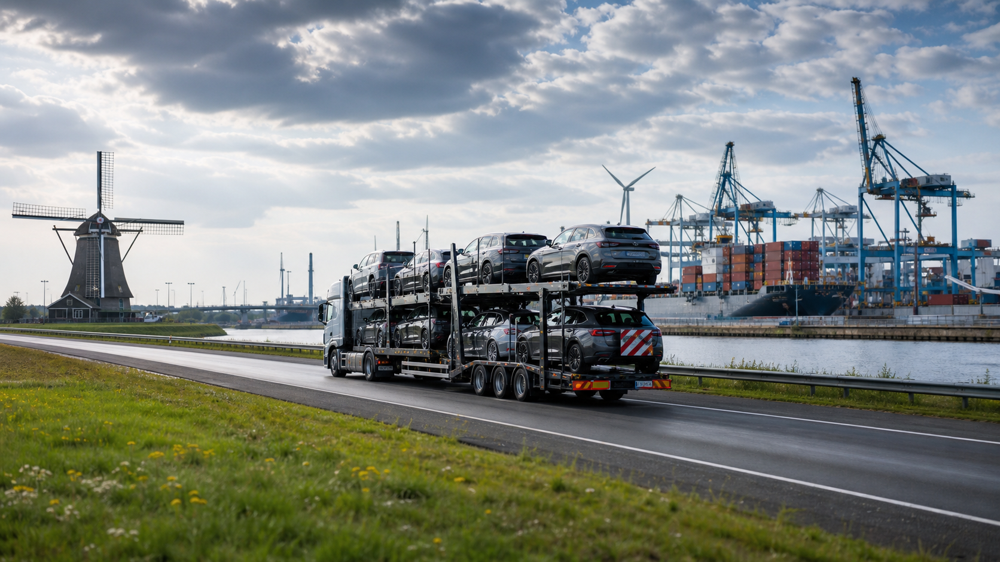
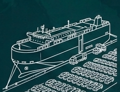
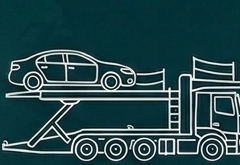
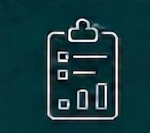

Flexibility
From growing vehicle traders to established automotive groups, our operations adapt to shipment volume, route complexity, and customer-specific handling requirements.

Contact usWhy Benchmark Logistics
We help automotive businesses move vehicles, parts, and supply chain operations with dependable execution, customs coordination, warehousing, and SCM consulting support.


About Benchmark Logistics
Established in 2025 and headquartered in Amsterdam, Netherlands, Benchmark Logistics specializes in helping auto industry businesses seamlessly enter and navigate European markets. With solid experience and a group of experts, our goal is to enable efficient, cost-effective logistics solutions across Europe, fostering reliability and long-term success.
At Benchmark, we strive to be an extension of your business, offering comprehensive supply chain solutions designed to support you and your team as you expand within the European market.
What sets us apart
From growing vehicle traders to established automotive groups, our operations adapt to shipment volume, route complexity, and customer-specific handling requirements.
We support documentation, customs requirements, vehicle handling standards, and operational procedures to help shipments move through European markets with confidence.
We align each logistics solution with your business goals, communication preferences, delivery expectations, and customer commitments across the automotive supply chain.
With smarter routing, consolidated flows, and efficient warehousing, Benchmark Logistics supports automotive supply chains with a more responsible operating mindset.
Our Services

01Vehicle processing center support for receiving, inspection, yard inventory, quality checks, storage, dispatch preparation, and release control.

02Finished vehicle movement by road, rail, sea, port, and multimodal routing for OEMs, dealers, fleet operators, and automotive trading companies.

03Supply chain planning, network design, process improvement, cost optimization, KPI setup, supplier coordination, and logistics visibility improvement.
Customs documentation support, import and export process coordination, compliance guidance, and cross-border handling for vehicles and automotive parts.
Automotive warehousing, parts storage, order fulfillment, packaging, inventory control, regional distribution, and dealer network delivery support.
Start a Conversation